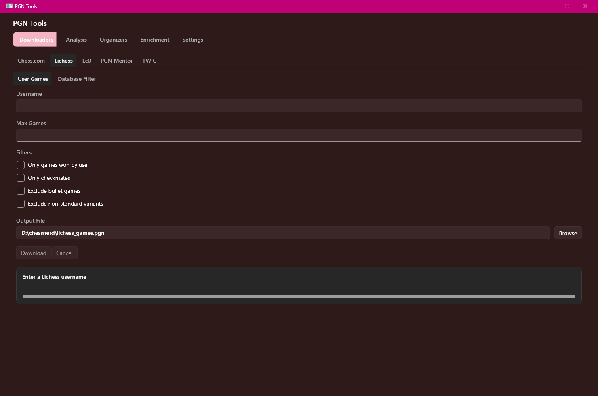

A fast, dark-mode Windows app for working with PGN chess files — download, organize, enrich, and analyze games. Built to chew through multi-gigabyte files without choking.
Built with heavy AI assistance — the owner provided the direction, requirements, and testing.

Single self-contained .exe — no installer, no separate .NET runtime.
Chess.com (user archives + monthly crawl), Lichess (user games + monthly DB), Lc0, PGN Mentor, and TWIC. The Chess.com and Lichess user downloads share filters: only wins, only checkmates, exclude bullet, exclude non-standard.
Filter (Elo / ply / checkmates / annotation cleanup), Sort, Split, Merge, Deduplicate, and Tour Breaker to pull real tournaments out of a giant dump.
ECO opening tags, missing Elo fill-in, event category, ply counts, Stockfish version normalization, and annotation stripping.
PGN statistics overview, UCI/Stockfish engine analysis, Elegance scoring, and a checkmate-only filter.
PgnTools-…-win-x64.exe.Everything streams game-by-game, so file size isn't the enemy.
PGN Tools is free. If it saved you time — or it's the kind of thing you'd have happily paid for — you can drop a few bucks in the tip jar. Genuinely appreciated.
❤ Support on Ko-fiThe general-purpose prompt builder + multi-model response combiner. Local only, no PGN-Tools specifics — use it for anything. (This used to live at the site root.)
Tailored to this repo: auto-loads the architecture overview and builds a review prompt — pick the whole codebase or a single tool, pulled live from GitHub.